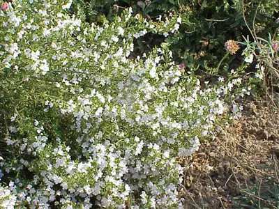

pranet · 出典付きの植物図鑑
Winter savory
Satureja montana L. · Lamiaceae

Satureja montana, is a perennial, semi-evergreen herb in the family Lamiaceae, native to warm temperate regions of southern Europe, the Mediterranean, and Africa. It has dark green leaves and summer flowers ranging from pale lavender, pink to white. The closely related summer savory is an annual plant.
出典: Wikipedia 英語版「Winter savory」 · CC BY-SA 4.0
異名: Clinopodium montanum (L.) Kuntze, Micromeria montana (L.) Rchb., Saturiastrum montanum (L.) Fourr., Thymus montanus (L.) Dum.Cours.
同定や利用は自己責任でお願いします。この図鑑だけを根拠に野生の植物を食べないでください。
出典
- 学名: World Flora Online Plant List 2026-06 · CC0 1.0
- 名前: Wikipedia の記事名と Wikidata · CC0 1.0（Wikidata）。記事名は事実
- 説明: Wikipedia 英語版「Winter savory」 · CC BY-SA 4.0
- 食用・毒性: World Checklist of Useful Plant Species (Diazgranados et al. 2020, RBG Kew) · CC BY 4.0
- 分布: World Checklist of Vascular Plants (WCVP), RBG Kew, version 2026-06-04 · CC BY 3.0
このページは pranet のデータから自動生成しています。コードは MIT、データは項目ごとのライセンス（説明）。